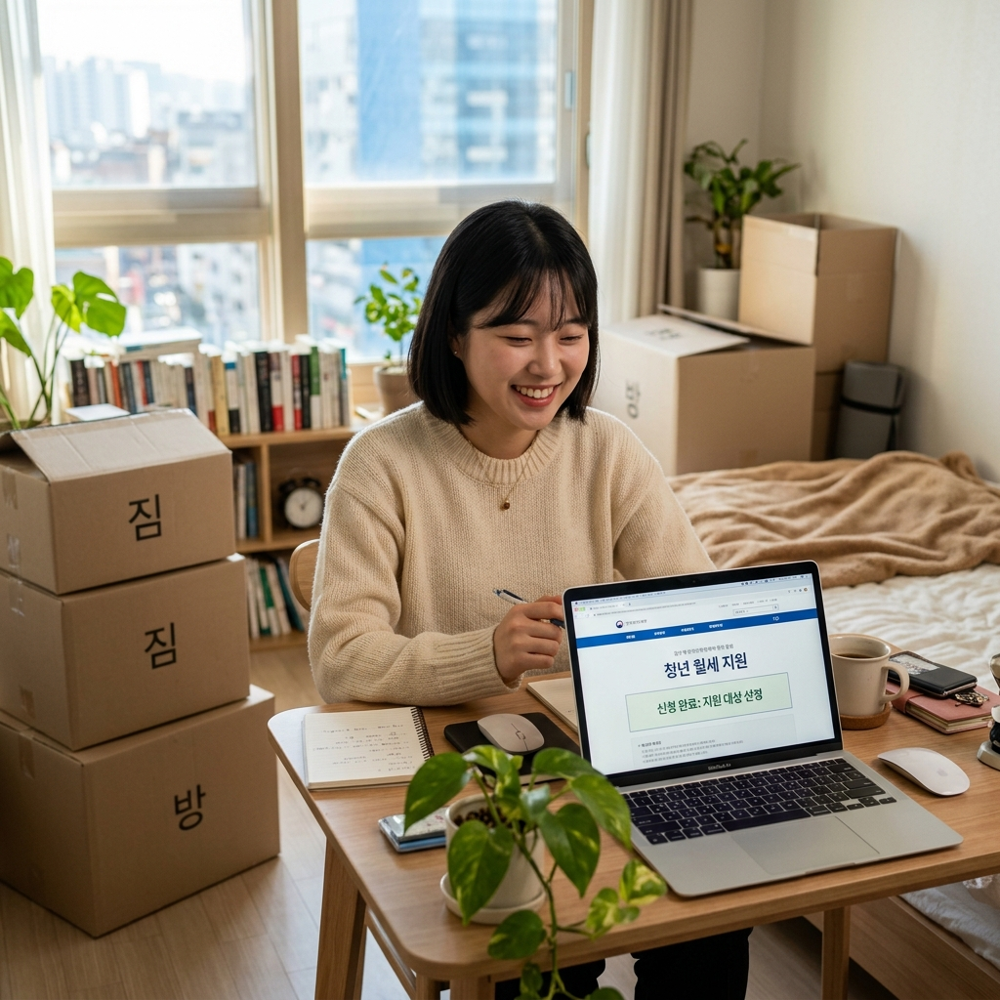
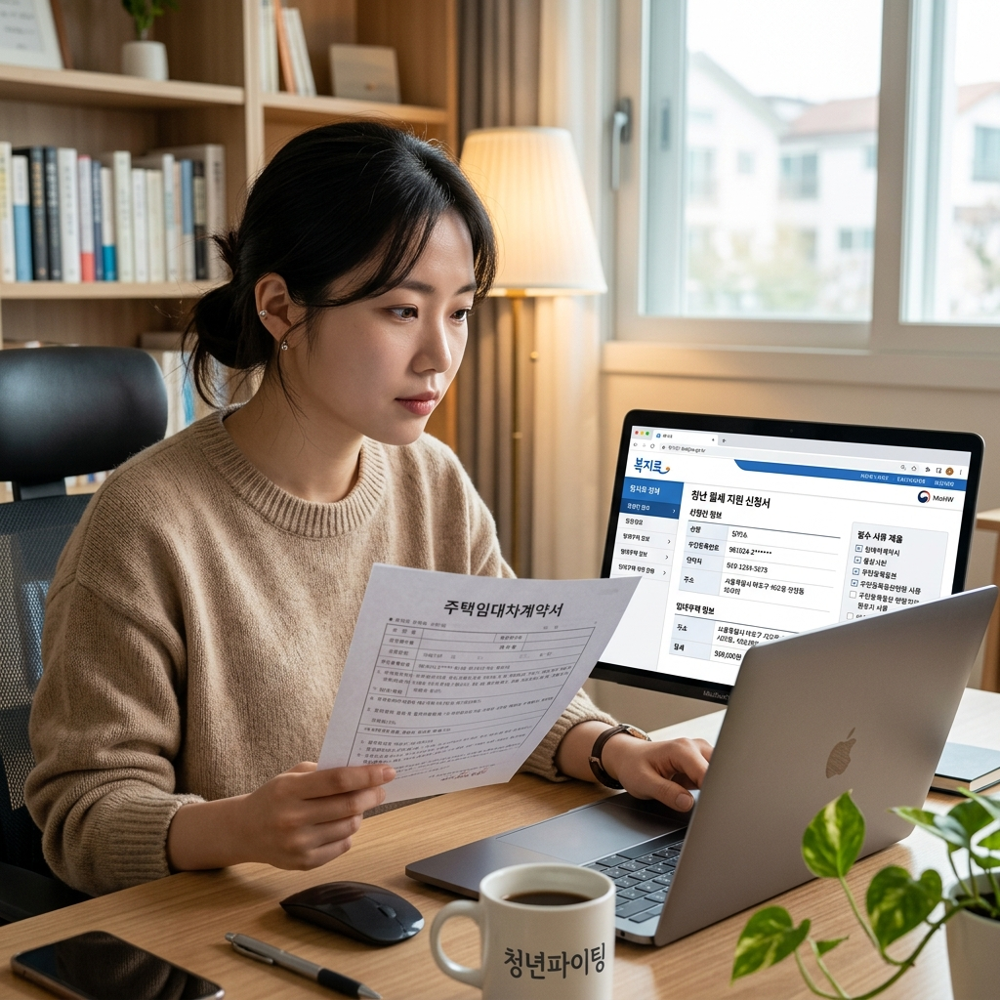
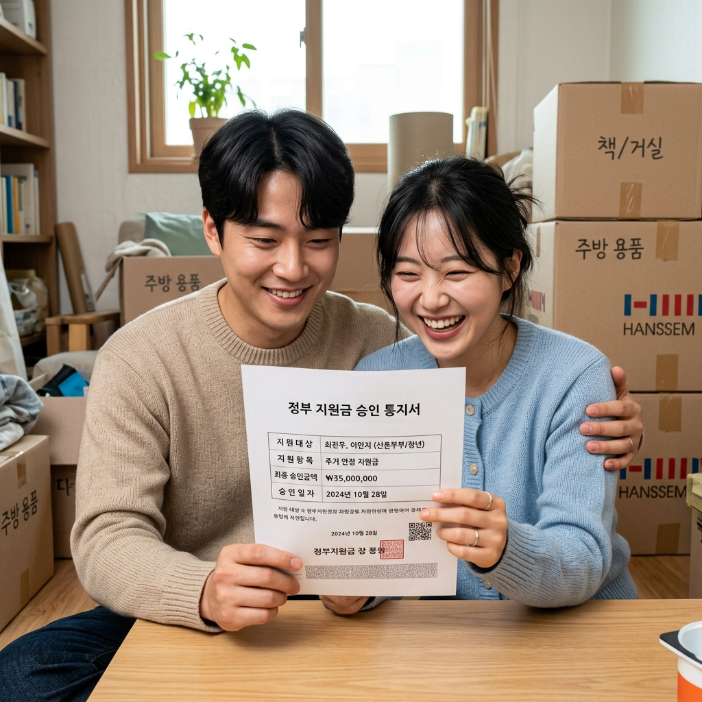

청년 월세 한시 특별지원 신청 기간·자격·서류 총정리
✍️ 직접 해보니
올봄에 청년 월세 지원 신청 공고가 났을 때 직접 복지로(bokjiro.go.kr)에 접속해 신청서를 작성해봤습니다. 처음에는 복잡할 것 같아 걱정했는데, 로그인 후 서비스 신청 메뉴를 따라가니 10~15분 안에 신청서 작성은 마칠 수 있었습니다. 다만 가족관계증명서와 임대차 계약서 파일을 미리 스캔해 준비해 두지 않아서 서류 첨부 단계에서 잠깐 막혔습니다. 필요 서류를 사전에 스캔해 두면 훨씬 빠르게 진행할 수 있을 것 같습니다. 이 글은 그 경험을 바탕으로 신청 준비부터 결과 확인까지 정리한 내용입니다.
※ YMYL 안내: 이 글은 2026년 3월 복지로 공식 발표 기준으로 작성되었습니다. 지원 금액·자격 요건은 연도마다 변동될 수 있으므로, 반드시 복지로(bokjiro.go.kr) 또는 국토교통부 공식 채널을 통해 재확인하시기 바랍니다.
01. 청년 월세 한시 특별지원이란
청년 월세 한시 특별지원은 국토교통부가 주거비 부담이 큰 청년 1인 가구를 지원하기 위해 시행하는 현금 지원 사업입니다. 부모와 별도로 독립 거주 중인 만 19~34세 청년에게 매월 실제 납부 월세 범위 내에서 최대 20만원을 지급합니다.
지원 기간은 최대 24개월(2년)이며, 생애 1회 수령이 원칙입니다. 총 수령 가능한 최대 금액은 480만원입니다. 현금으로 본인 계좌에 매달 입금되는 방식이며, 지원 기간 중 자격 조건이 변경되면 지원이 중단될 수 있습니다.
이 사업은 2021년 처음 시행되었으며, 이후 수차례 재공고를 통해 신청 기회가 늘어났습니다. 연도별로 사업 재공고 여부가 달라지므로 국토교통부 보도자료와 복지로 공지사항을 주기적으로 확인하는 것이 중요합니다.

복지로에서 청년 월세 지원을 신청하는 청년 / AI 제작 이미지
02. 2026년 신청 기간과 현재 상황
2026년 청년 월세 한시 특별지원의 신청은 2026년 3월 30일(월) 오전 9시부터 5월 29일(금) 오후 4시까지 진행되었습니다. 현재는 이 신청 기간이 마감된 상태입니다.
신청 이후 자격 심사(소득·주거 요건 확인)에 3~5개월이 소요되며, 심사를 통과한 경우 2026년 하반기 중 지원금 지급이 시작될 예정입니다. 신청 결과는 복지로 홈페이지 또는 문자 메시지로 개별 안내됩니다.
아직 신청하지 못한 분은 다음 신청 공고를 대비해 자격 요건과 필요 서류를 미리 파악해 두는 것이 좋습니다. 복지로 콜센터(☎129)와 국토교통부 청년 월세 전담 콜센터(☎1599-0001)에서 최신 공고 현황을 안내받을 수 있습니다.
03. 지원 대상 — 내가 해당되는지 확인하기
청년 월세 한시 특별지원을 받으려면 다음 조건을 모두 충족해야 합니다.
연령: 신청 시점 기준 만 19세 이상 ~ 만 34세 이하. 2026년 신청 기준 1991~2007년 출생자.
독립 거주: 부모 또는 친족의 주민등록 주소지가 아닌 별도 주소지에서 거주 중이어야 합니다. 부모와 같은 건물 내 다른 호수라도 원칙적으로 제외됩니다.
무주택: 본인 명의 주택을 소유하지 않아야 합니다. 임차 주택은 전용면적 60㎡ 이하, 임차보증금 5,000만원 이하여야 합니다.
월세 납부 중: 임대차 계약서상 월세를 실제로 납부하고 있어야 합니다. 전세(보증금만 있는 경우)는 지원 대상에서 제외됩니다.
04. 소득 기준 — 중위소득 60%·100% 계산법
소득 기준은 청년가구와 원가구 두 가지를 동시에 충족해야 합니다.
청년가구는 신청자 본인을 포함한 현재 함께 거주하는 가족을 기준으로 하며, 이 청년가구 소득이 기준 중위소득 60% 이하여야 합니다. 2026년 기준 1인 가구 중위소득 60%는 약 134만원 내외입니다(매년 보건복지부 고시 기준으로 달라짐).
원가구는 신청자의 부모까지 포함한 가족 전체를 기준으로 하며, 원가구 소득이 기준 중위소득 100% 이하여야 합니다. 부모와 함께 살지 않더라도 원가구 소득이 기준을 초과하면 탈락합니다.
복지로 공식 사이트에서 제공하는 '자격 모의계산' 서비스를 통해 본인의 예상 자격 여부를 미리 확인해 볼 수 있습니다. 정확한 소득 산정 방식과 금액은 복지로(bokjiro.go.kr)에서 재확인하세요.

복지로 청년 월세 지원 신청 화면 / AI 제작 이미지
05. 신청 방법 단계별 안내 — 복지로와 주민센터
신청은 온라인(복지로)과 오프라인(주민센터) 두 가지 방법으로 가능합니다.
온라인 신청(복지로 bokjiro.go.kr):
1. 복지로 홈페이지 접속 → 로그인(공인인증서 또는 카카오·네이버·패스 간편 인증)
2. 서비스 신청 → 복지서비스 신청 → 복지급여 신청 → 기타
3. '청년월세 한시 특별지원' 선택 → 신청서 작성
4. 필요 서류 파일 첨부
5. 최종 제출
오프라인 신청(주민센터): 신청자 주소지 관할 읍면동 행정복지센터 방문. 신분증과 필요 서류 지참.
06. 필요 서류 준비하기
신청 시 기본적으로 필요한 서류는 다음과 같습니다. 상황에 따라 추가 서류가 요청될 수 있습니다.
기본 서류: 주민등록등본(청년가구 구성원 확인), 가족관계증명서(원가구 확인), 임대차 계약서 사본, 최근 3개월 월세 납부 확인 서류(계좌이체 내역·영수증), 건강보험료 납부 확인서(소득 산정용).
온라인 신청 시 공공데이터 동의를 통해 일부 서류(주민등록등본 등)가 자동 수집되기도 합니다. 서류는 PDF 또는 JPG 형식으로 스캔해 두면 첨부 시 편리합니다.
주민등록등본·가족관계증명서는 정부24(gov.kr)에서 무료로 온라인 발급받을 수 있습니다.
07. 심사 결과와 지원금 지급 방식
신청 후 심사 기간은 보통 3~5개월이 소요됩니다. 서류 심사 → 현장 확인(필요 시) → 최종 승인 절차를 거쳐 결과가 통보됩니다.
승인되면 매달 20일 전후로 신청자 본인 계좌로 지원금이 입금됩니다. 지원 금액은 실제 월세 납부액과 월 최대 20만원 중 적은 금액이 기준입니다.
지원 기간(최대 24개월) 중 이사하거나, 주거 유형이 바뀌거나, 소득이 늘어 자격에서 벗어나면 지원이 중단됩니다. 이 경우 변경 신고 의무가 있으며, 미신고 상태로 지원금을 수령하면 환수 조치를 받을 수 있습니다. 지급 내역은 복지로 앱 '나의 복지급여' 메뉴에서 확인할 수 있습니다.

청년 월세 지원 결과 확인에 기뻐하는 청년 / AI 제작 이미지
08. 자주 묻는 질문 Q&A
Q. 부모와 같은 주소지에 세대 분리만 하면 신청할 수 있나요?
A. 안 됩니다. 물리적으로 다른 주소지에 거주해야 합니다.
Q. 친구와 쉐어하우스에 살면 신청 가능한가요?
A. 임대차 계약서에 신청자 본인이 임차인으로 등재되어 있고 월세를 실제로 납부 중이라면 가능합니다. 사전에 담당 부서에 확인하는 것이 안전합니다.
Q. 근로장려금과 중복 수령이 가능한가요?
A. 근로장려금과는 중복 수령이 가능합니다. 지자체 청년 월세 지원과도 많은 경우 중복 가능하나, 지자체별로 규정이 다르므로 사전 확인이 필요합니다.
Q. 이미 이전 사업에서 24개월 전부 받았으면 다시 신청할 수 있나요?
A. 원칙적으로 생애 1회이므로 24개월을 전부 받은 경우에는 재신청이 불가합니다.
09. 탈락 시 이의신청과 다음 신청 준비
심사 탈락 시 결과 통보일로부터 90일 이내에 이의신청이 가능합니다. 복지로 온라인 또는 주민센터 방문으로 접수하며, 추가 서류 제출 기회가 주어집니다.
탈락 사유가 소득 초과인 경우 소득 산정 방식을 꼼꼼히 확인하세요. 근로장학금·정부 장학금 등 일부 항목은 소득 산정에서 제외될 수 있습니다.
다음 신청 공고를 대비해 지금부터 준비해야 할 것들이 있습니다. 부모와 주민등록을 분리하고 실제 독립 거주 상태를 유지하는 것이 첫 번째입니다. 임대차 계약서는 확정일자를 받아 보관하고, 월세 이체 내역을 통장에 남겨두세요. 복지로 공지사항을 주기적으로 확인해 차년도 신청 공고를 놓치지 않도록 합니다.
📝 작성자 메모
이 글의 정보 기준일은 2026년 3월 복지로 공식 발표 기준입니다. 지원 금액(월 최대 20만원), 지원 기간(최대 24개월), 소득 기준(청년가구 중위소득 60%·원가구 100% 이하)은 국토교통부 공식 발표를 참고했습니다. 차년도 사업 재공고 여부, 구체적인 중위소득 기준 금액, 자기부담 조건 등은 연도마다 변동될 수 있으므로 복지로(bokjiro.go.kr) 또는 국토교통부 마이홈 포털(myhome.go.kr), 국토교통부 콜센터(☎1599-0001)를 통해 최신 정보를 직접 확인하시기 바랍니다.